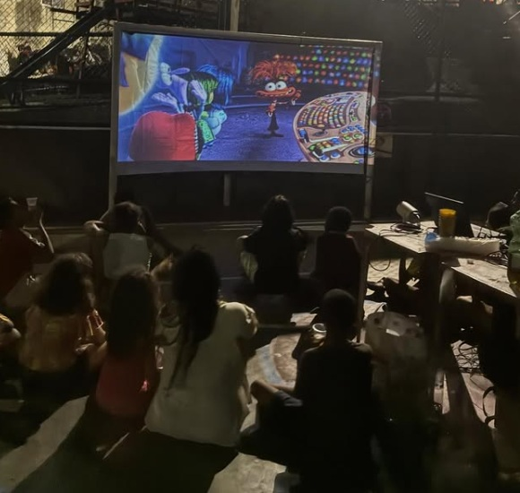

Cinema comunitário, direito à cultura e à arte. Aproximando a comunidade da sétima arte e da linguagem audiovisual.
Fundado em 2023, o Cine Santo Amaro aproxima a comunidade do cinema e da linguagem audiovisual. Em um formato de cinema comunitário, o projeto reúne moradores em sessões coletivas, debates e oficinas — acreditando que cultura não é privilégio e que a periferia tem histórias que merecem ser contadas e assistidas.
Mais do que exibir filmes, o núcleo forma plateia crítica, valoriza a memória cultural carioca e cria oportunidades de produção audiovisual dentro do próprio território.

O modelo "sala de cinema", onde a comunidade se reúne para assistir a um filme juntos.
Programação de festivais e mostras independentes, com uma ampla gama de obras em exibição.
Debates e formação de recepção crítica, reunindo amantes do cinema da comunidade.
Sessões ao ar livre como "cinema de rua", preservando a tradição e a memória carioca.
Iniciação e estudo da realização audiovisual no ambiente do Santo Amaro.
Gravação de podcast e outros formatos audiovisuais em estúdio e set.
Experiências que unem turismo e cinema, com visitas a locações, sets de gravação e espaços do audiovisual.
Equipamentos, filmes e voluntários(as) ajudam a manter as sessões e oficinas acontecendo.